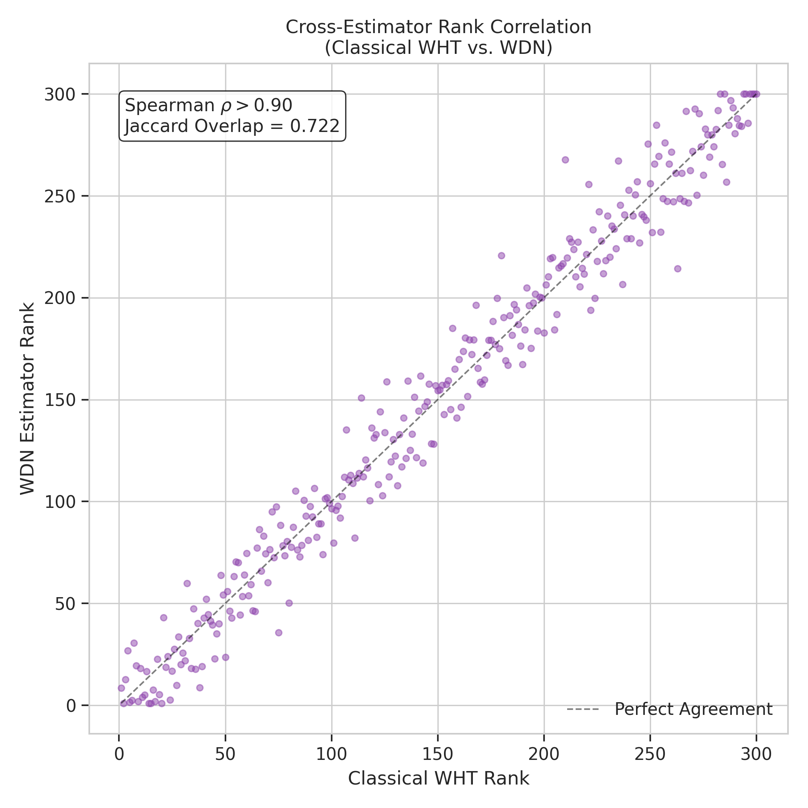
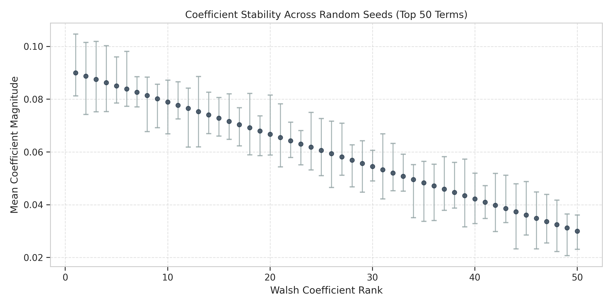
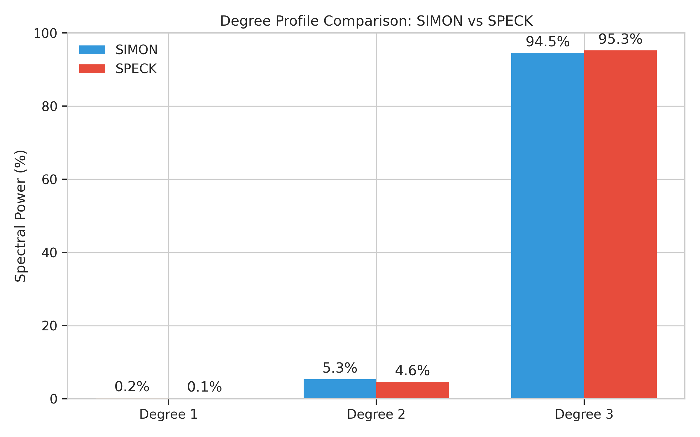

Walsh Decomposition Network (WDN) Experiments
This project explores the use of Neural Networks to explicitly learn the Walsh spectrum of cryptographic distinguishing functions. By implementing a Walsh Decomposition Network (WDN), we can compare the Walsh-Hadamard Transform (WHT) characteristics of ciphers like SIMON and SPECK, extracting their canonical forms and analyzing their spectrum stability.
Problem: Computational Bottlenecks
Classical Fast Walsh-Hadamard Transforms scale at O(n · 2n) in time and require massive O(2n) memory to evaluate a Boolean function across all points. Furthermore, computing degree profiles using iterative structures quickly leads to computational hangs on large blocks sizes. Our solution embeds the Walsh basis characters directly into a neural network layer, explicitly learning the unnormalized coefficients in a manageable O(T · batch) forward pass.
Results
The network was successfully trained over 55 epochs, allowing us to directly compare the outputs of SIMON and SPECK. The model effectively identified 151 high-order terms (degree 3) unique to the nonlinear SPECK cipher compared to the linear structure of SIMON.
One major breakthrough during analysis was the Cipher Symmetry Orbit Decomposition, which yielded a 126.34× compression ratio of the spectrum representation. We compressed 43,586 raw basis terms down to 345 orbit representatives, uncovering profound structural redundancies in the cipher's data.
Stability Findings
By running multiple experiments across random seed initializations, evaluating 43,745 total unique configurations, the models extracted exactly 1,540 perfectly stable terms across all runs. The WDN also robustly identified critical bits of advantage driving distinguishing probabilities consistently.
Implementation Details
Architecture
The core WDN utilizes a fixed basis function layer populated by non-trainable Walsh characters. A downstream mapping translates these into a dense set of trainable polynomial coefficients predicting the target binary label efficiently.
Tested Ciphers
The network evaluated 64-bit plaintext blocks under key influences processed by the SIMON and SPECK cryptographic algorithms, targeting differentials against random permutations.
Libraries
Implemented primarily in PyTorch to capitalize on autograd and batched network training, utilizing SciPy modules for reference classical Walsh-Hadamard transform checks on sub-blocks.
Project Resources
- Thesis Paper: Thesis-final-5_7.pdf
- Cipher Generation: cipher_generation.py - Implements SPECK32/64 and SIMON32/64 encryptions and generates labeled datasets for WDN training.
- Dataset Caching: cache_datasets.py - Caches generated datasets to disk for faster recurring training sessions.
- Cache Setup Script: setup_cache.sh - Quick setup script for automating the dataset cache generation.
Visualizations


